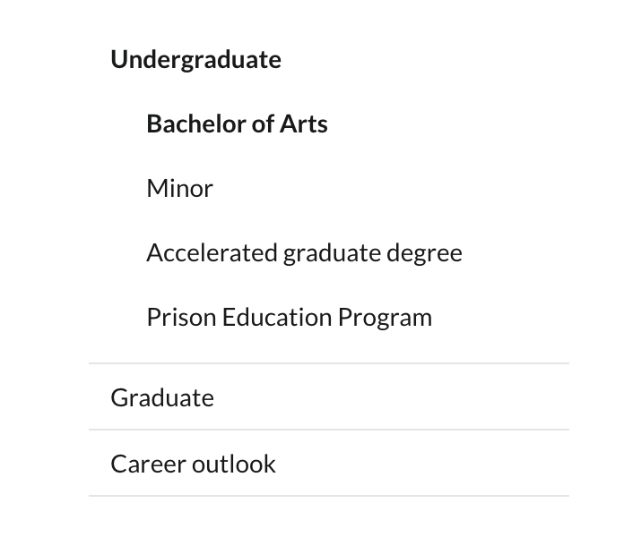
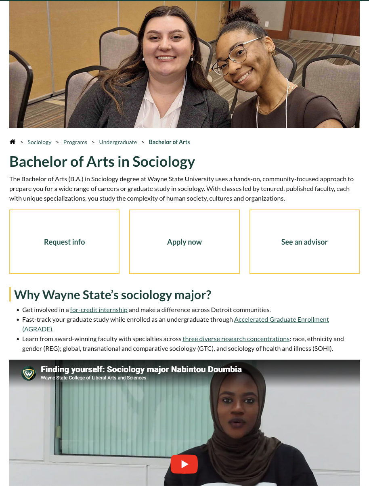
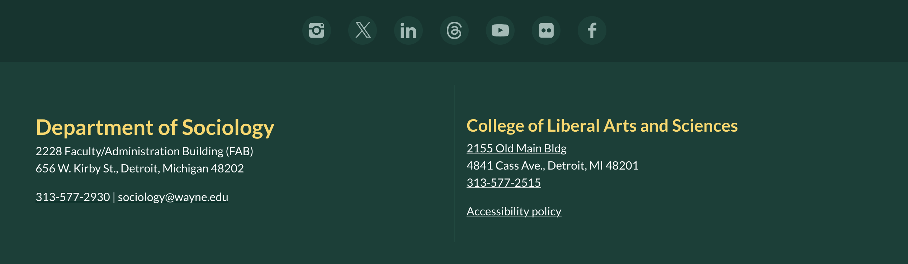
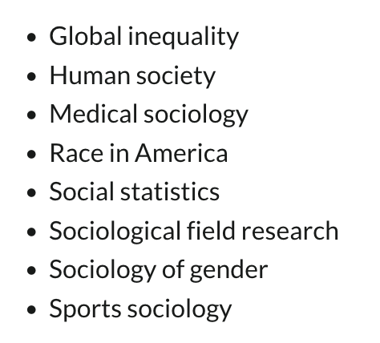
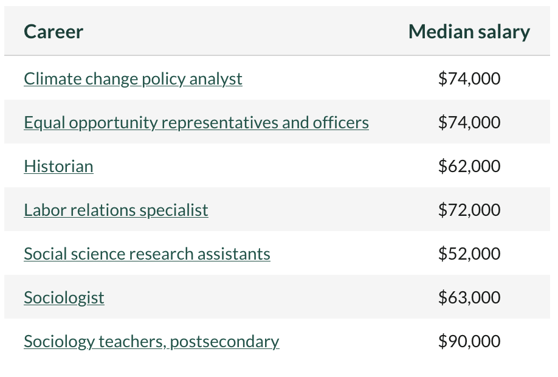
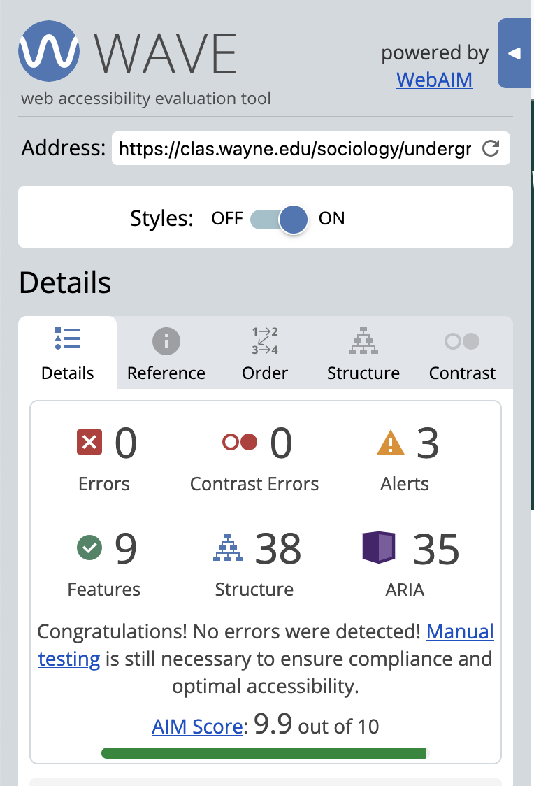
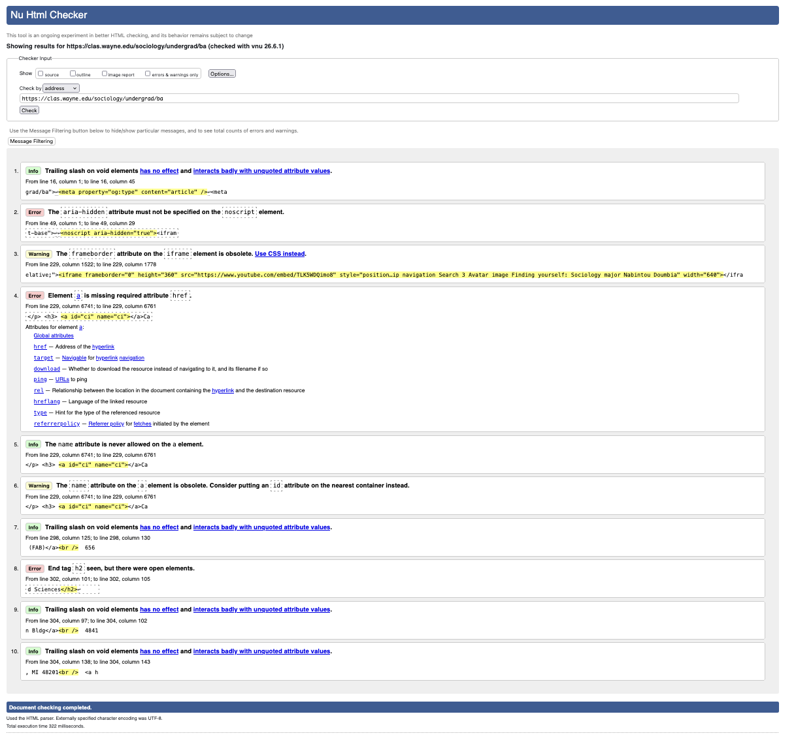

Page Selection: Bachelor of Arts in Sociology Program Page
https://clas.wayne.edu/sociology/undergrad/ba
I selected this page to examine primarily because my undergraduate degree is in Sociology and Social Thought. Additionally, this page met all of the requirements: a clear header and footer, a navigation area, a main content area, an image, multiple lists, and three heading levels. It even has a table for me to examine.
Major Sections
Site Header
For this section I would use the <header> element, because this is the header for the page. It contains the school name, site navigation, and page name. Sectioning these things off together inside the <header> element makes it possible to style this section separately from the main content of the page.
Main Navigation

For this section I would use the <nav> element, because it contains the main navigation menu for the page. Using the <nav> element helps distinguish this section for screen readers and search engines.
Main Content

For this section I would use the <main> element, because it contains the main content of the page. This element helps identify the main content of the page for search engines and screen readers, in addition to helping keep things organized for the developer. As the provided screenshot is only a small sample of the main page content, I might consider using <section> elements to further divide up this section within the <main> element.
Site Footer

For this section I would use the <footer> element, because this is the footer for the page. It contains social and other contact information for the program. As with the header, sectioning these things off together makes it possible to style them separately from the main content of the page.
Headings
| Heading Text | Level | Reason |
|---|---|---|
| Bachelor of Arts in Sociology | <H1> |
This is the title of the page. |
| Why Wayne State's sociology major? | <H2> |
This is the first major heading, and represents a section of the page. |
| What is sociology? | <H2> |
This represents another section of the page content. |
| Learning objectives | <H2> |
This represents another section of the page content. |
| Sociology program requirements and curriculum | <H2> |
This represents another section of the page content. |
| Courses | <H3> |
This is a subsection of the program requirements and curriculum section. |
| Hands-on sociology research | <H2> |
This represents another section of the page content, not another subsection. |
| Accelerated pathway to a master's degree in sociology | <H2> |
This represents another section of the page content. |
| Sociology bachelor's degree career outlook | <H2> |
This represents another section of the page content. |
| Career insights | <H3> |
This represents a subsection of the degree career outlook section. |
| Financial aid and tuition | <H2> |
This represents another section of the page content, not another subsection. |
| Learn more about Wayne State University's sociology major | <H2> |
This represents another section of the page content. |
Lists
This page contains a number of lists with different information about the program. All of the lists on this page are unordered lists, because the information in them does not need to be in a particular order. My first example is the main navigation menu:
This navigation menu uses nested <ul> elements to create the nested menu of links that are not numbered.

My second example of a list is this plain text list of courses offered within the Sociology program. This list would also use the <ul> element, because it is not numbered or in a necessary order.
Links
Internal Links
Examples of internal links:
- Request info:
<a href="/sociology/admissions/request-info"> - See an advisor:
<a href="/sociology/students/advising"> - Accelerated Graduate Enrollment (AGRADE):
<a href="/sociology/undergrad/agrade">
External Links
Examples of external links:
- Climate change policy analyst:
<a href="https://www.onetonline.org/link/summary/19-2041.01" target="_blank"> - Instagram icon:
<a href="https://instagram.com/wsusociology" target="_blank"> - LinkedIn icon:
<a href="https://linkedin.com/school/WayneStateCLAS" target="_blank">
I would expect all of these links to open in a new window or tab, because they all include the target="_blank" attribute in the <a> element.
The page does not use any visual indicator to distinguish external links for the user.
Tables

This table shows some of the careers one might go into with a BA in Sociology, and their median salaries. The table uses <th> header cells to label the columns. I think the table structure makes sense for this content, because it makes it easy to read the data.
Accessibility

The results of the Wave analysis was an AIM score of 9.9 (out of 10), with zero errors and three alerts. Of the three alerts, two were the inclusion of the <noscript> element, and one was the inclusion of a YouTube video.
The WAVE report notes that the content contained in the <noscript> element will only be shown if a user has JavaScript disabled, and that that doesn't happen very often.
The YouTube video seems to be the area where the page developer could make the biggest accessibility impact. Although the video has closed captioning, the captions are auto-generated by YouTube. The WAVE report notes that auto-generated captions "are typically not of sufficient quality to be considered equivalent" to the necessary synchronized captioning. The developer, therefore, could make an improvement here by adding higher-quality (manual) captioning to the video on YouTube.
The image on this page does not appear to have an alt description. Although this information does not appear in the WAVE report, an inspection of the page code reveals that the image is actually the background image of a <div> element. Because this image is purely decorative, a text alternative is not required by accessibility standards, and screen readers can safely skip it without missing context.
Validation

The WC3 HTML Validation results show three errors, two warnings, and five info notifications.
One error shows that an <a> element is missing the href property. This means that the <a> element has been used as a placeholder rather than an actual link. W3C outlines this as an acceptable use of the <a> element. However, if the developer wanted to fix this error on the report, I suppose they could do so by utilizing an alternative element to create a placeholder there, such as the<span> element. Whether this would work will depend on the context, or why a placeholder is necessary in that specific instance (which I am unsure of).
Summary
Overall, I think this page is well-structured and designed with accessibility in mind. It's content sections are clearly defined visually and through semantic elements, and the content is thoughtfully organized using headers, lists, and a table. The biggest issue I found was probably the accessibility issue with the YouTube video. Although the video contains auto-generated captions, accessibility could be improved by adding better captions to the video.